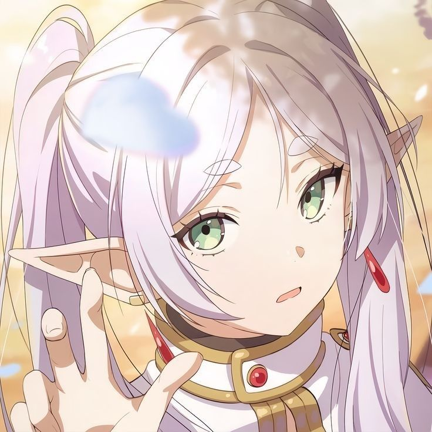
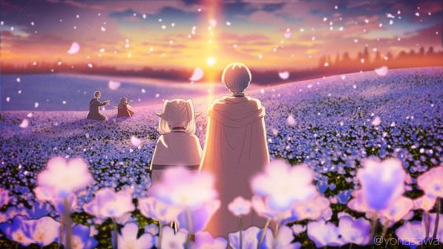
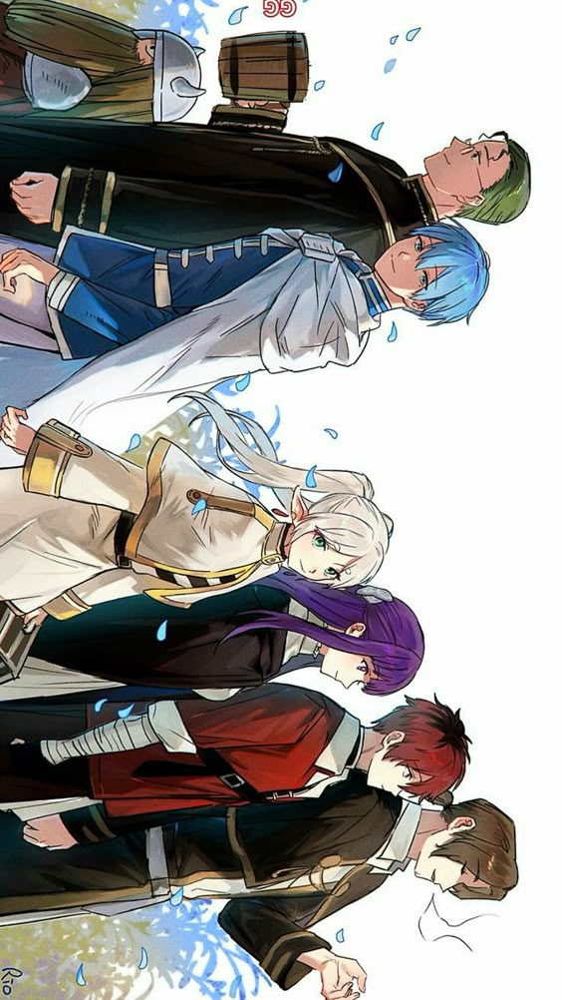
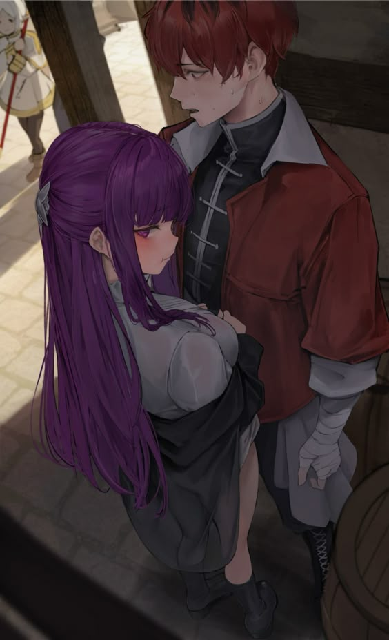
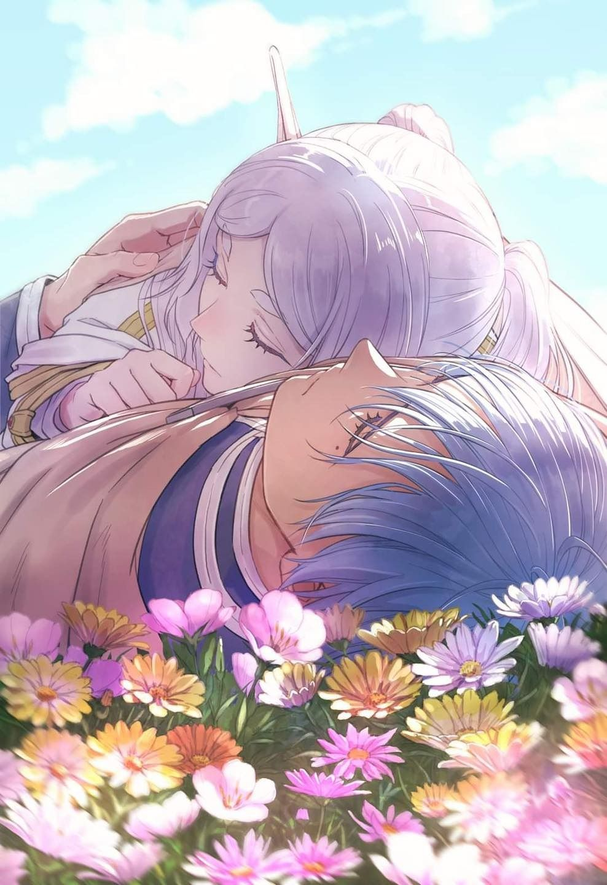
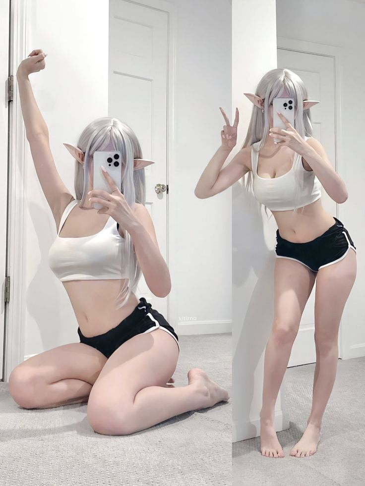
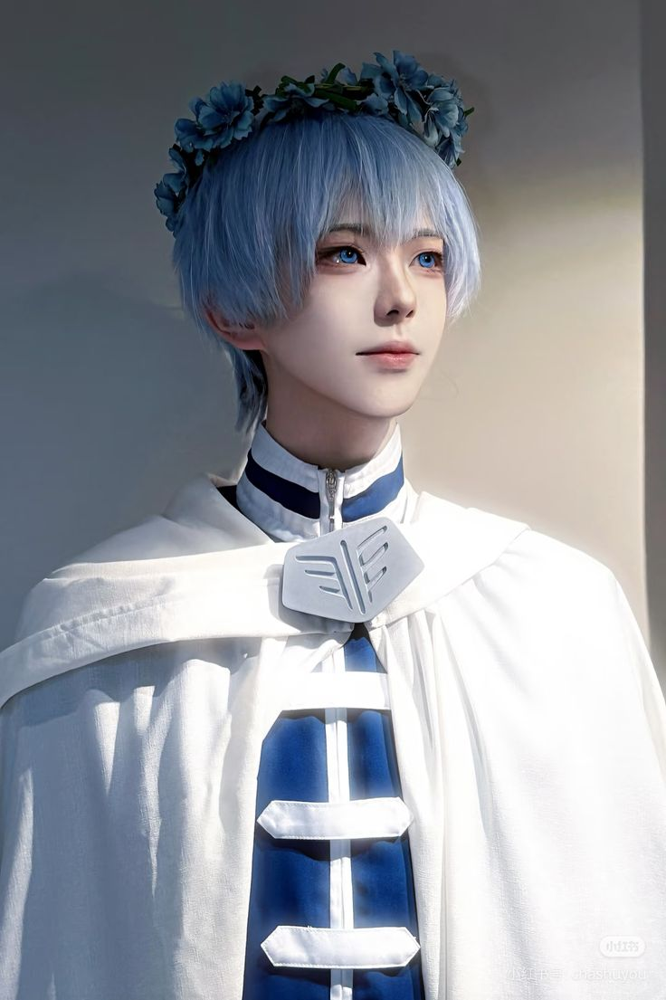

Mengambil data dari MyAnimeList...
Mengambil data dari MyAnimeList...
Penyihir elf yang telah hidup lebih dari seribu tahun. Setelah mengalahkan Raja Iblis bersama kelompok pahlawan, ia memulai perjalanan baru untuk memahami arti sebenarnya dari hubungan manusia.





✦ Developer & Anime Lovers
Gua atar seorang pelajar yang tinggal di Jakarta 🏙️. Gua memiliki berbagai hobi yang gua sukai, mulai dari menggambar 🎨, coding 💻, membaca manga 📚, bermain game 🎮, hingga berpergian untuk mengeksplorasi tempat-tempat baru 🗺️. Gua membuat profil ini untuk semua orang yang berkunjung dan ingin melihat perjalanan gua di dunia pemrograman.
Klik untuk melihat penjelasan karakter di Anime

Penyihir elf berusia seribu tahun yang baru belajar memaknai waktu dan perpisahan. Tenang, misterius, dan jauh lebih dalam dari yang terlihat di permukaan.

Pahlawan sejati yang tindakannya bukan untuk dikenang, melainkan karena memang pantas dilakukan. Meninggalkan jejak di hati semua orang yang mengenalnya.
Murid berbakat dengan dedikasi keras kepala. Di balik ekspresi datar tersimpan rasa sayang yang dalam kepada orang-orang penting dalam hidupnya.
Penyihir pertama yang menggunakan sihir untuk memotong segalanya berdasarkan imajinasi murni. Liar, bebas, dan tidak peduli dengan norma yang membatasi.
Dukung Fhaz & jelajahi project lainnya